Chinese cuisine comprises cuisines originating from China, that varies with the country's large population and geographic diversity, as well as from Chinese people from other parts of the world. Due to the Chinese diaspora and the historical power of the country, Chinese cuisine has profoundly influenced other cuisines in Asia and beyond, with modifications made to cater to local palates. Chinese food staples like rice, soy sauce, noodles, tea, chili oil, and tofu, and utensils such as chopsticks and the wok, can now be found worldwide.
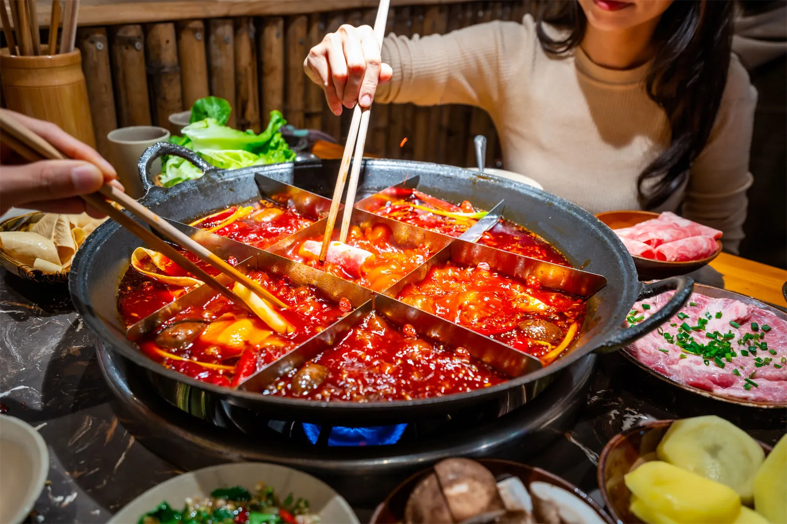
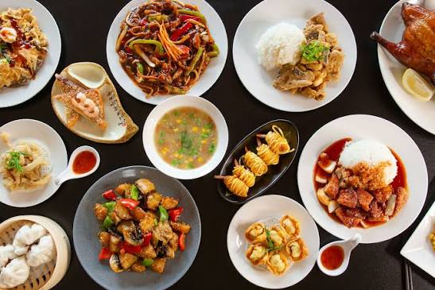
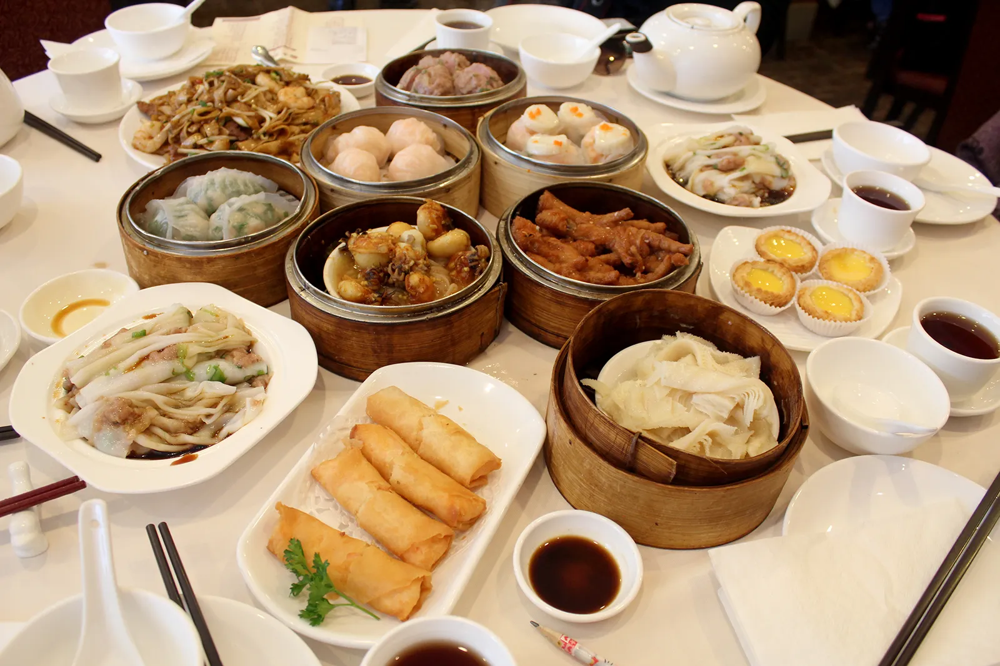
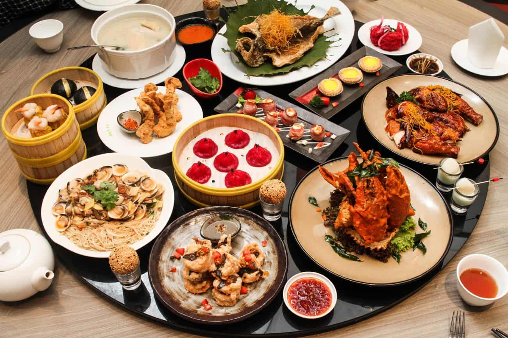
Italian cuisine is a Mediterranean cuisine consisting of the ingredients, recipes, and cooking techniques developed in Italy since Roman times, and later spread around the world together with waves of Italian diaspora. Significant changes occurred with the colonization of the Americas and the consequent introduction of potatoes, tomatoes, capsicums, and maize, as well as sugar beet—the latter introduced in quantity in the 18th century. Italian cuisine is one of the best-known and most widely appreciated worldwide. In 2025, Italian cuisine was listed as intangible cultural heritage by UNESCO.
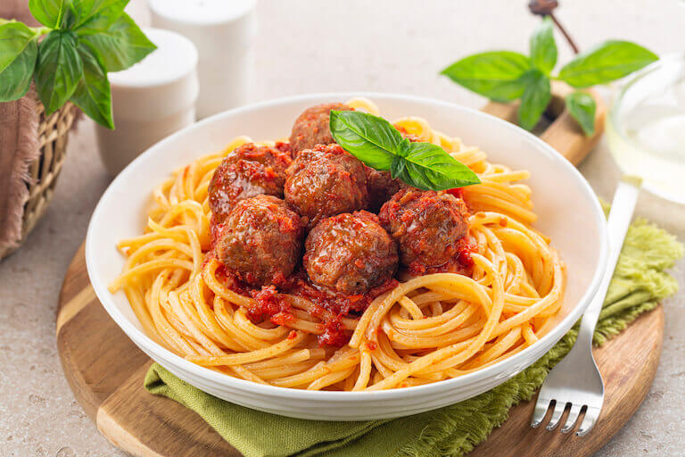
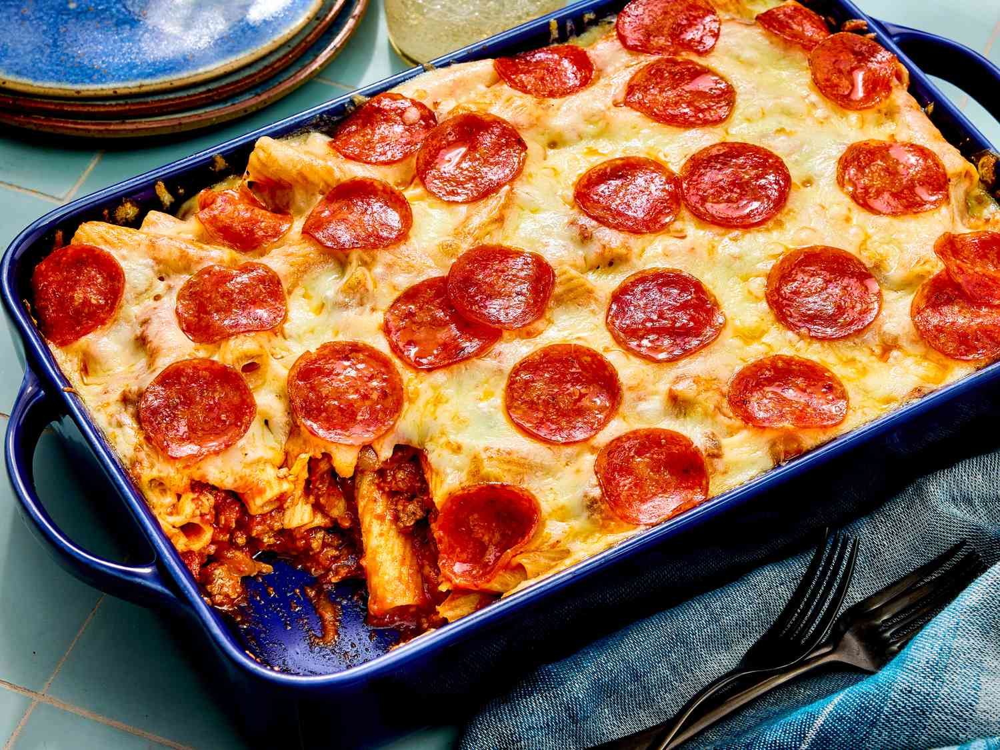
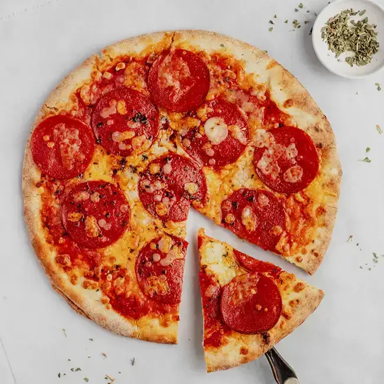
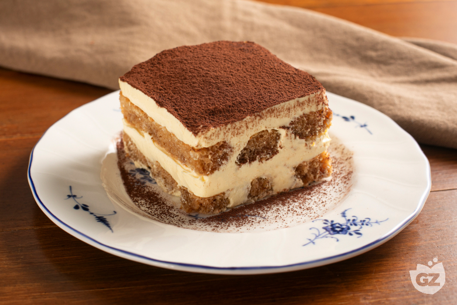
Dutch cuisine is formed from the cooking traditions and practices of the Netherlands. The country's cuisine is shaped by its location on the fertile Rhine–Meuse–Scheldt delta at the North Sea, giving rise to fishing, farming, and overseas trade. Due to the availability of water and flat grassland, the Dutch diet contains many dairy products such as butter and cheese. The court of the Burgundian Netherlands enriched the cuisine of the elite in the Low Countries in the 15th and 16th century, a process continued in the 17th and 18th centuries thanks to colonial trade. At this time, the Dutch ruled the spice trade, played a pivotal role in the global spread of coffee, and started the modern era of chocolate by developing the Dutch process of first removing fat from cocoa beans using a hydraulic press, creating cocoa powder, and then alkalizing it to make it less acidic and more palatable.
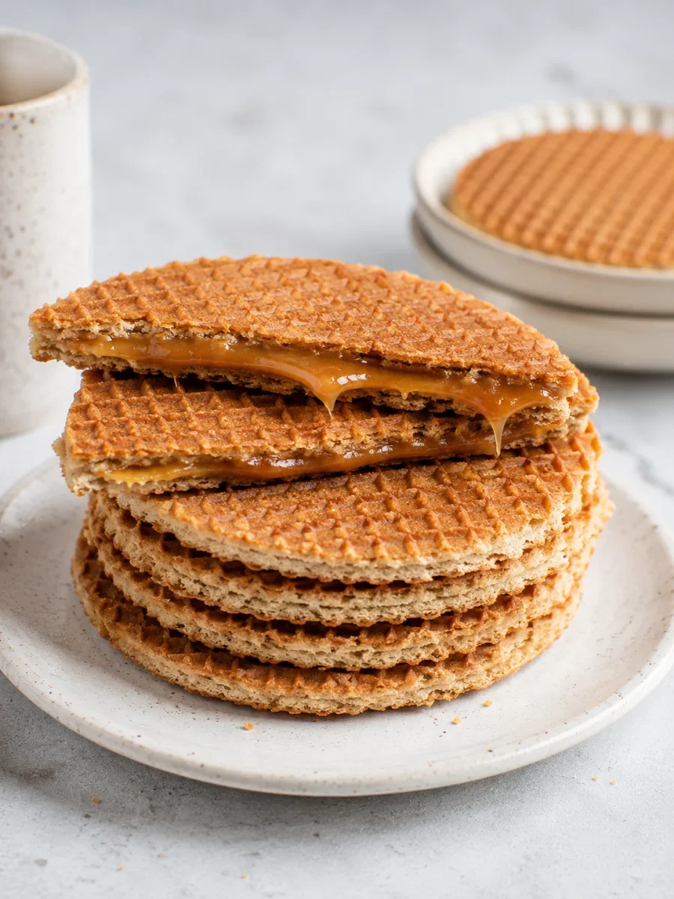
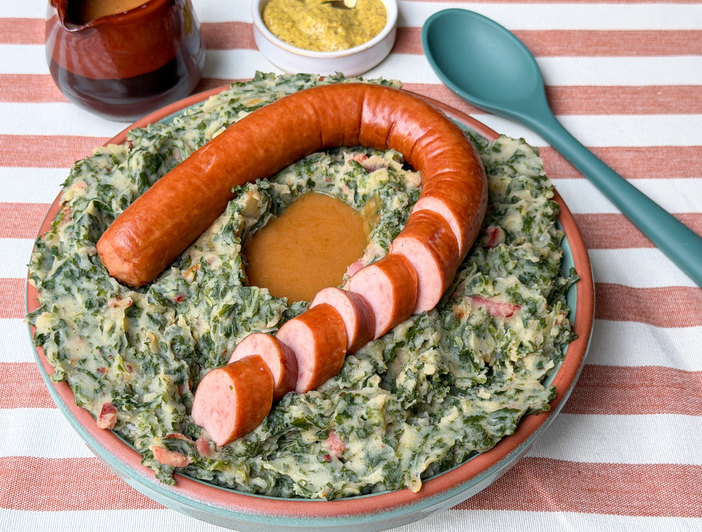
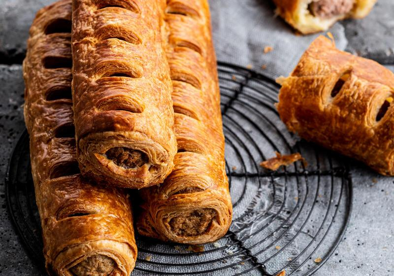
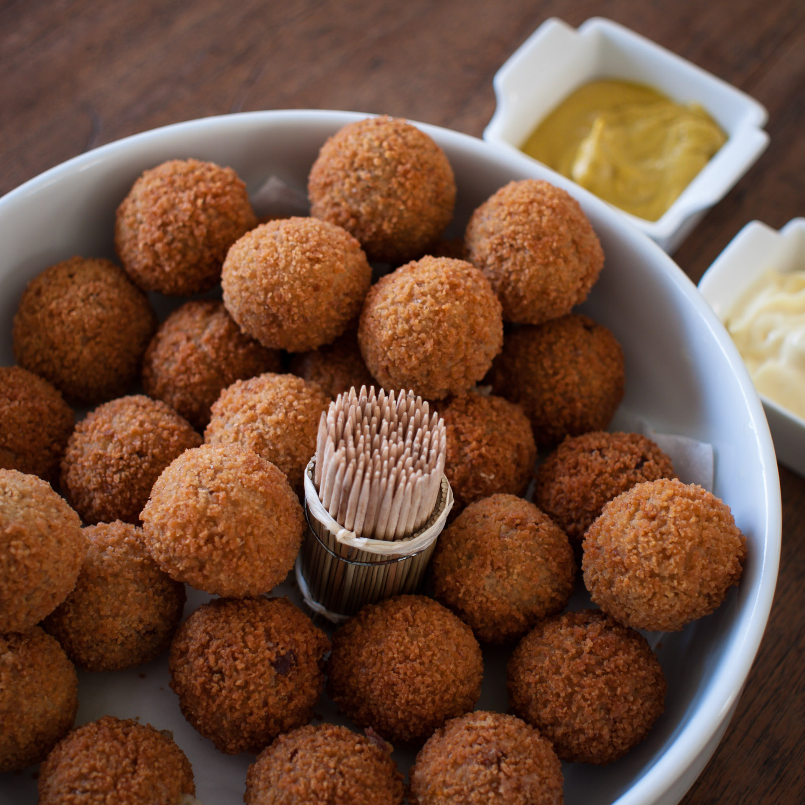
French cuisine is the cooking traditions and practices of France. In the 14th century, Guillaume Tirel, a court chef known as "Taillevent", wrote Le Viandier, one of the earliest recipe collections of medieval France. In the 17th and 18th centuries, chefs François Pierre La Varenne and Marie-Antoine Carême spearheaded movements that shifted French cooking away from its foreign influences such as from Italian cuisine and developed France's own indigenous style.
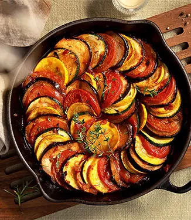
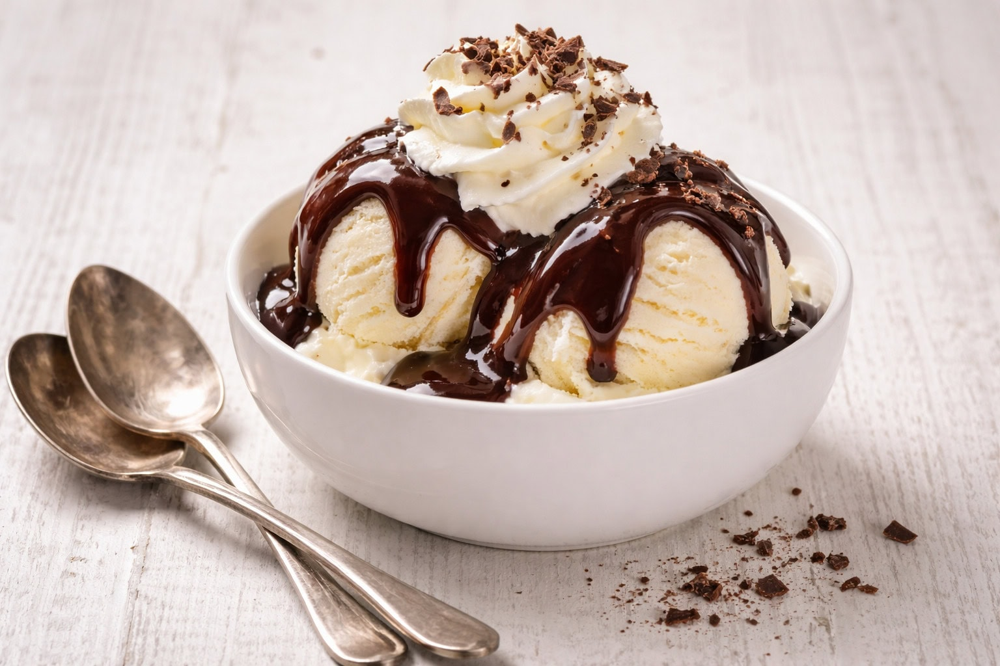
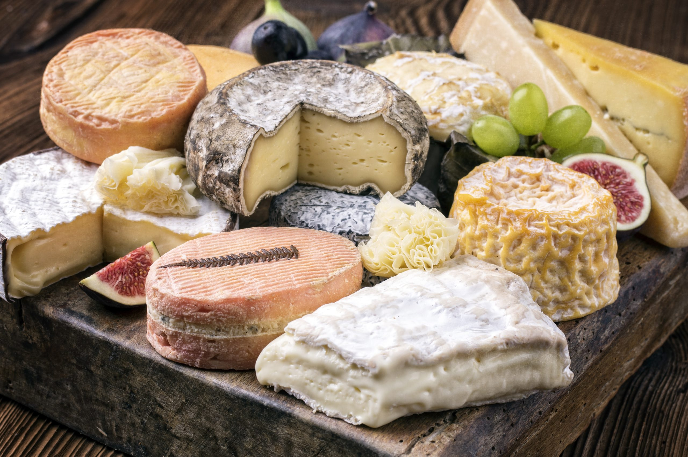
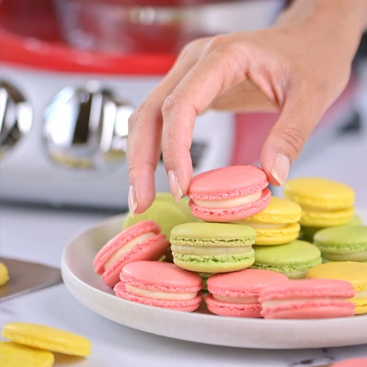